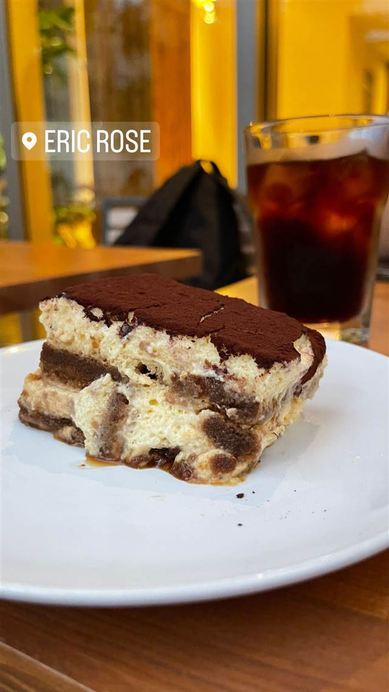

ERIC ROSE
ハワイの人気カフェが開いた日本1号店のパンケーキ
ERIC ROSE
ハワイ・マノアの人気店「MORNING GLASS COFFEE + CAFE」のオーナー、エリック・ローズが手がける日本1号店。「シンプルでまた食べたくなる料理」をコンセプトに、パンケーキやグラノーラなどを提供する。
REVIEWS
世間の評判
3.57食べログ
コーヒーとケーキ、緑に囲まれた空間
- コーヒーの美味しさとキャロットケーキの評価が高いという声が多い
- 表面を香ばしく焦がしたバスクチーズケーキが美味しいという声もある
- 緑に囲まれた落ち着いた雰囲気とテラス席の開放感を評価する声が多い
- 表参道の中では待たずに入りやすいと評価される一方で2000円弱と高いと感じる人もいる
食べログ 口コミ460件
| 創業 | 2020年開業 |
|---|---|
| 系譜 | 創業者エリック・ローズが2011年にハワイ・マノアで開いたカフェ「MORNING GLASS COFFEE + CAFE」を経て、日本1号店として青山・ののあおやまに出店。 |
| 看板 | パンケーキ、グラノーラ、サラダボウル、ラテなど |
| こだわり | 「シンプルでまた食べたくなる料理」をコンセプトに、旅先で出会った美味しい料理を再現。 |
| どこから | 都心 |
| 営業時間 | 月〜日 09:00-19:00 |
| 予算 | 昼 ¥2,000～¥2,999 夜 ¥2,000～¥2,999 |
| 場所 | 表参道駅 東京都港区北青山3-4-3 ののあおやま1F |
| メモ | 青山「ののあおやま」内、テラス席あり、表参道駅から徒歩約6分。 |
食べたもの：ティラミスとアイスコーヒー / チーズケーキ
NEARBY
近い店・同じ系統の店
-
 タイ 表参道
表参道バンブー
1977年創業、日本初のサンドイッチ専門店として始まった洋館
夜 ¥5,000～¥5,999
タイ 表参道
表参道バンブー
1977年創業、日本初のサンドイッチ専門店として始まった洋館
夜 ¥5,000～¥5,999
-
 カフェ 表参道
カフェラントマン 青山店（CAFE LANDTMANN）
ウィーン本店と同じレシピで作る本格ザッハトルテ
昼 ¥1,000～¥1,999 夜 ¥3,000～¥3,999
カフェ 表参道
カフェラントマン 青山店（CAFE LANDTMANN）
ウィーン本店と同じレシピで作る本格ザッハトルテ
昼 ¥1,000～¥1,999 夜 ¥3,000～¥3,999
-
 ドリンク 表参道
CHAVATY（チャバティ）
スリランカの茶園で選んだウバ茶のティーソフトクリーム
昼 ～¥999 夜 ～¥999
ドリンク 表参道
CHAVATY（チャバティ）
スリランカの茶園で選んだウバ茶のティーソフトクリーム
昼 ～¥999 夜 ～¥999
-
 カフェ 表参道駅
i2 cafe (アイツーカフェ)
フルーツサンド店の姉妹店が出す、オーブン焼きのダッチベイビー
昼 ¥2,000～¥2,999 夜 ¥2,000～¥2,999
カフェ 表参道駅
i2 cafe (アイツーカフェ)
フルーツサンド店の姉妹店が出す、オーブン焼きのダッチベイビー
昼 ¥2,000～¥2,999 夜 ¥2,000～¥2,999
-
 コーヒー 表参道
lohasbeans coffee（旧店名 Lounge1908 cafe）
コロンビア産スペシャルティコーヒー専門商社のカフェ、数量限定ティラミス
昼 ¥2,000～¥2,999 夜 ¥2,000～¥2,999
コーヒー 表参道
lohasbeans coffee（旧店名 Lounge1908 cafe）
コロンビア産スペシャルティコーヒー専門商社のカフェ、数量限定ティラミス
昼 ¥2,000～¥2,999 夜 ¥2,000～¥2,999
-
 コーヒー 明治神宮前駅・表参道駅
Ralph's Coffee Omotesando
NYの人気店「ラ・コロンブ」特別ブレンドのカフェラテ
コーヒー 明治神宮前駅・表参道駅
Ralph's Coffee Omotesando
NYの人気店「ラ・コロンブ」特別ブレンドのカフェラテ